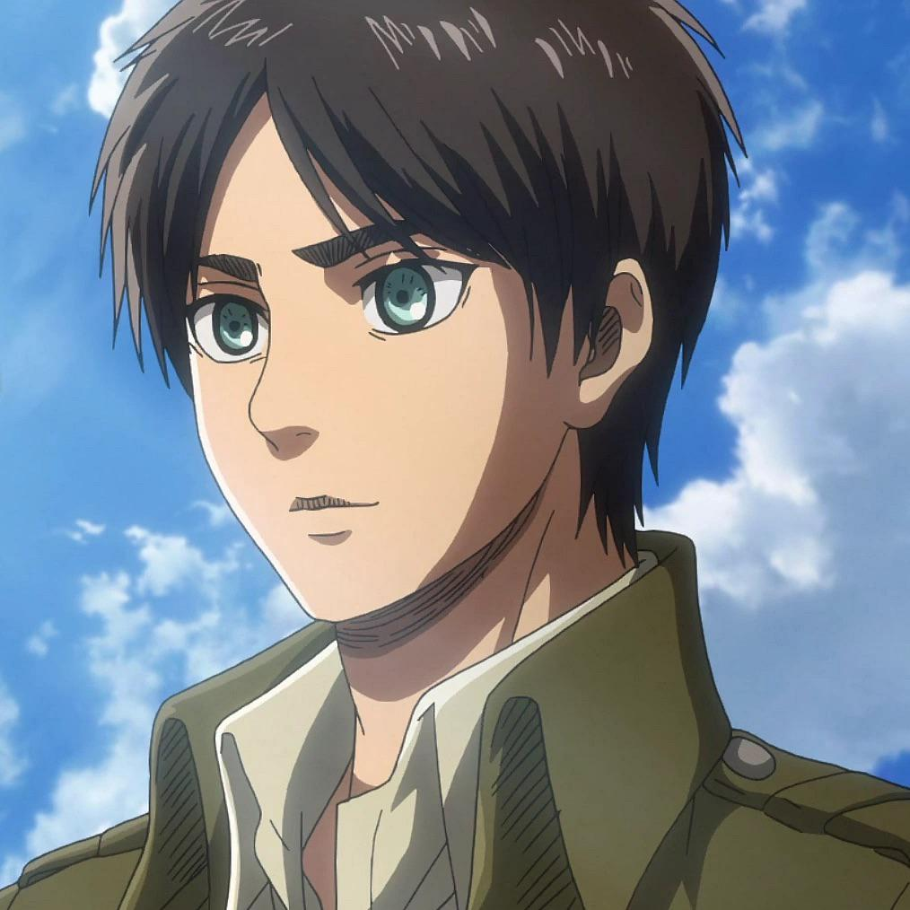
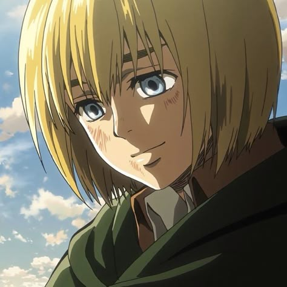

Attack on Titan
Az Attack on Titan egy izgalmas, sötét hangulatú japán anime, amely egy olyan világban játszódik, ahol az emberiség hatalmas falak mögé kényszerült a titánok miatt.
A történet középpontjában Eren Yeager áll, aki miután szembesül a titánok pusztításával, elhatározza, hogy elpusztítja őket, és szabadságot szerez az emberiségnek.
Az anime tele van fordulatokkal, érzelmekkel, háborúval és olyan titkokkal, amelyek folyamatosan megváltoztatják a történetet.

A történet világa
Az emberiség három hatalmas fal mögött él, amelyek védelmet nyújtanak a titánok ellen. Ezek a különös lények embereket fogyasztanak, és folyamatos veszélyt jelentenek a túlélőkre.
A falak azonban nem jelentenek örök biztonságot. Amikor egy hatalmas titán áttöri a külső védelmet, az emberek élete örökre megváltozik.
Főbb karakterek
Ismerd meg a történet meghatározó szereplőit!

Eren Yeager
A történet főszereplője, akinek legnagyobb célja a szabadság elérése.

Mikasa Ackerman
Kivételes harcos, aki mindig megvédi azokat, akik fontosak számára.

Armin Arlert
Rendkívül intelligens karakter, aki stratégiai gondolkodásával segíti társait.